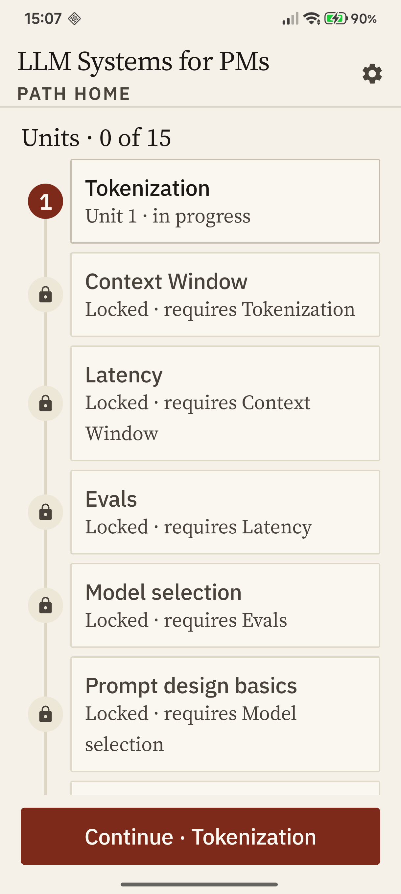
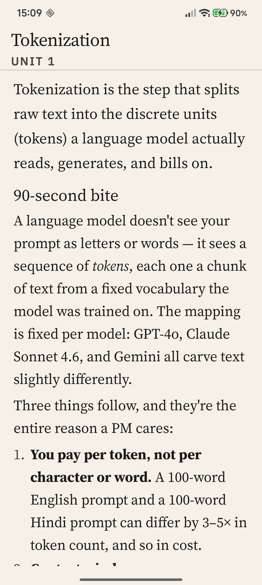

A focused Android reader for senior product managers who need to make build / buy / skip calls on AI features — and back the call up with calibrated reasoning. Twenty units, in order, each one a single trade-off. No streaks. No badges. No daily nudge.
Most AI-fluency content treats PMs like coding-bootcamp students. Perpenda treats you like the decision-maker you are. Every unit teaches one concept through the same three-question scaffold — because that's how product decisions actually get made.
Each unit names the concrete decisions the concept changes — cost forecasts, latency budgets, vendor comparisons, scoping calls. Not "important to know," but "load-bearing for these decisions."
Failure modes, named. Estimating cost in words instead of tokens. Treating latency as one number. Shipping streaming UX where output is consumed atomically. The mistakes you can recognize after, but ought to recognize before.
The discipline the right call demands — naming three latency metrics instead of one, asking eng for benchmarks on your prompt shape, measuring before promising. Cheaper than the failure mode it prevents.
One path, in v1. LLM Systems for PMs. Fifteen units are published; the last five — the operating-phase units — lock from real-use signal rather than from the armchair.
Two core screens — the path home and the unit reader. Editorial typography, hairline rules, no decorative imagery, no progress bars within a unit. The visual restraint is the design stance — and it makes the writing earn its space.


Each unit's claims carry a tier: settled, contested, or unsettled. Sources sit after the decision prompt — never before — so the consensus doesn't prime your answer. The grader will tell you when it doesn't have enough signal to grade fairly.
Sideload the signed APK directly. Google Play Protect verifies the install. When v1.1 ships, the app surfaces an in-app banner — no app store required.
v1.0 ships today — fifteen units, calibrated grading, the full loop. The remaining five operating units lock from real-use signal rather than from the armchair. Install today, or leave an email and we'll write when v1.1 lands.